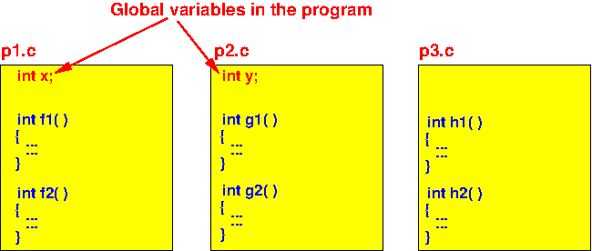
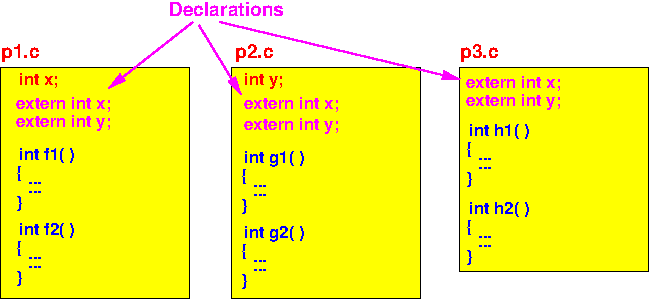

- When you write a computer program,
you will use variables to
store information
needed/used by the
statements in the
program
- One important task when
you write a (correct)
computer program is:
- Making sure that a program variable is accessible in the function(s) that need to make use (= access) of the information stored in that variable
The scoping rules (that we just learned) will determine which function(s) will be able to access a variable
- Because the
scope of
local variables,
parameter variables and
static local variables is:
- Local variables, parameter variables and static local variables are only accessible in one function (i.e.: inside the function where the variable is defined)
Therefore:
- We do not need to worry about making these kinds of variables accessible in other functions (because they cannot be accessed by other functions....)
- Where can
a static global varaible
be accessed:
- static global variables are accessible by functions in the same program file
- Best practice to ensure that
static global variables
are most accessible:
- If we define the static global variables at the top of the program file, the all the static global variables will be accessible by all functions in the program file
Because when the static global variables are defined at the top:
- All functions in
the program file will
follow after the
definition of the
static global variables
Consequently:
- All functions in the program file can access the static global variables
- Property of
global variables:
- Only the global variables are accessible (= used) by functions (= program statements) in different files !!!
- Therefore:
- We need to organize the global variables carefully so they can accessed by all functions in all program files
- What you need to do to
make
global variables
accessible to
(all)
functions in
all program files:
- When global variables are
defined in
some program file:
- All the global variables must be declared (at the top) in all other program files
- When global variables are
defined in
some program file:
- Example:
- Suppose a
C program consists of
3 program files
p1.c, p2.c and p3.c
and has
2 globals variables
x and y:

- Then we must declare them
in other program files
as follows:

There is an easier way to declare global variables which I will dicuss next
- Suppose a
C program consists of
3 program files
p1.c, p2.c and p3.c
and has
2 globals variables
x and y:
- Because you can declare
a variable
as long as the
declaration does
not conflict with
its definition,
it is easier to:
- Declare all global variable in all program files, even when the global variable is defined in that program file....
Example:
- Suppose a
C program consists of
3 program files
p1.c, p2.c and p3.c
and has
2 globals variables
x and y:
- Then we simply declare
all global variables
inside
all program files
as follows:

Even though the global variable x is defined and declared in the program file p1.c, there is no error as long as the declaration and definition do not conflict.
The same is true for the global variable y in the program file p2.c
- Previously, we saw this
common practice in
C programming:
(
click here)
- Write
a header file
prog.h for
each (library)
C source program file prog.c
The header file prog.h will contain:
- Declaration of
all functions that are
defined in the C program file
- Some other stuff that will be discussed later (specifically: user-defined types and global variables )
- Declaration of
all functions that are
defined in the C program file
- Include the
header file
prog.h in
every C program file that
calls
one or more functions defined
in the C program file
prog.c
- This is done to declare the functions so the C compiler will not use implicit function prototyping
- Write
a header file
prog.h for
each (library)
C source program file prog.c
- Suppose we have
defined the
following global variables
in file
glob2.c:
glob2.c: int a, b; float c, d; void print() { printf( "print( )>>> a = %d, b = %d\n", a, b); printf( "print( )>>> c = %f, d = %f\n", c, d); }
- We like to use these
global variables in
another program file:
glob1.c: int main( int argc, char *argv[] ) { a = 2; b = 3; printf( "a = %d, b = %d\n", a, b); c = 2.0; d = 3.0; printf( "c = %f, d = %f\n", c, d); print( ); // Calls print( ) in glob2.c }Then:
- We must first
declare the
global variables in the
program file where they are
used
- The variable declaration is used
to inform the
C compiler of the
data type of the
global variables
(So the C compiler can perform type conversion !!!)
- The variable declaration is used
to inform the
C compiler of the
data type of the
global variables
We will study how to declare global variables next....
- We must first
declare the
global variables in the
program file where they are
used
- Syntax to declare a
global variable in
C:
extern DataType varName ;
- Example:
File: glob1.c File: glob2.c extern int a, b; extern float c, d; int main( int argc, char *argv[] ) { a = 2; b = 3; printf( "a = %d, b = %d\n", a, b); c = 2.0; d = 3.0; printf( "c = %f, d = %f\n", c, d); print( ); // Calls print( ) in glob2.c }int a, b; float c, d; void print() { printf( "print( )> a = %d, b = %d\n", a, b); printf( "print( )> c = %f, d = %f\n", c, d); }Demo:
cd /home/cs255000/demo/c/multiple-files gcc -c glob1.c gcc -c glob2.c gcc glob1.o glob2.o a.out a = 2, b = 3 c = 2.000000, d = 3.000000 print( )>>> a = 2, b = 3 print( )>>> c = 2.000000, d = 3.000000
- Global variables
in C:
- A global variable can be
defined in
any C program file
- Functions in the same file as the global variable can access the variable !!!
- If you want to access the
global variable in a
different file:
- You must declare the global variable in that C program file
- A global variable can be
defined in
any C program file
- This sounds
tedious...
But we have a C-preprocessor trick to make thing easy !!!!!